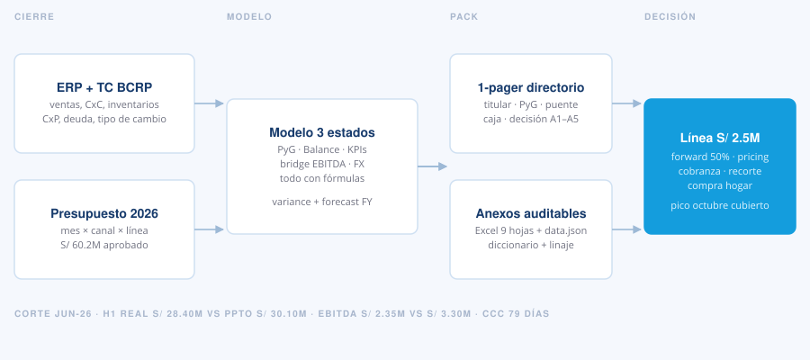
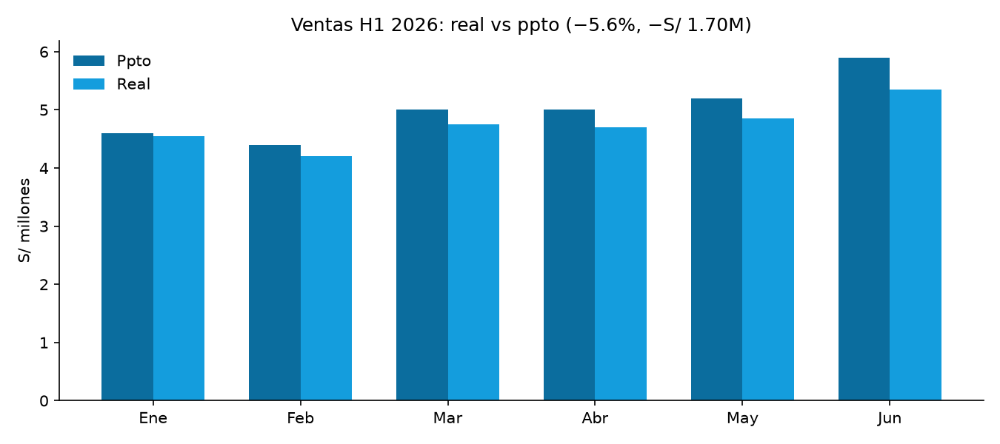
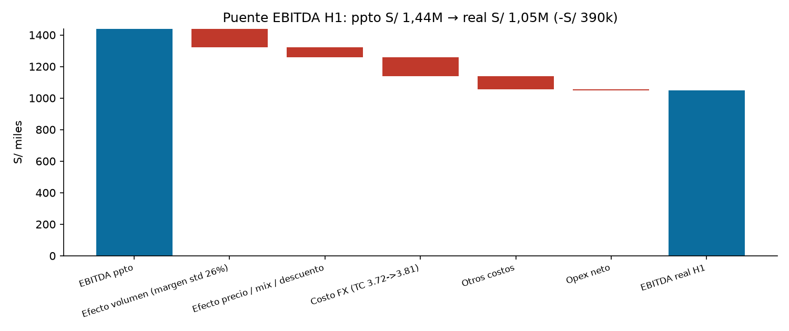
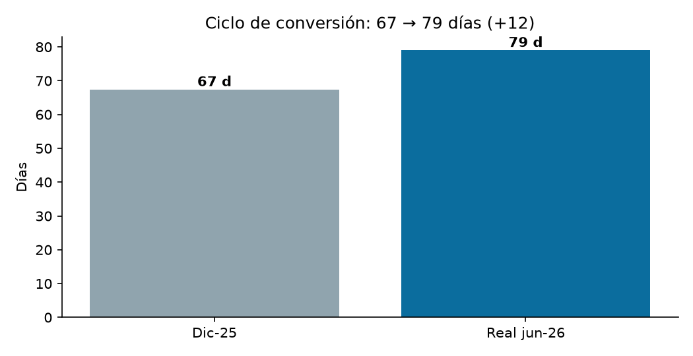
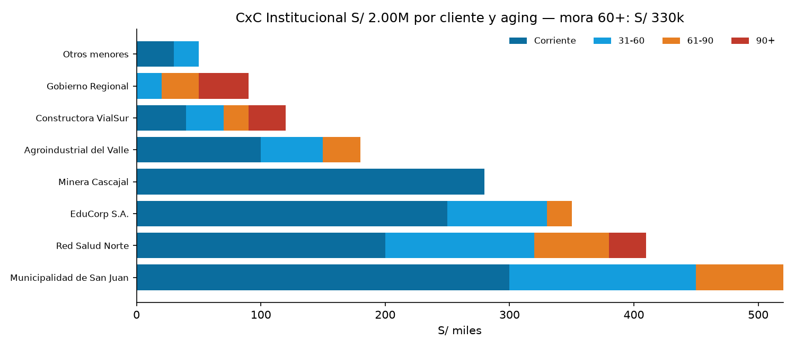
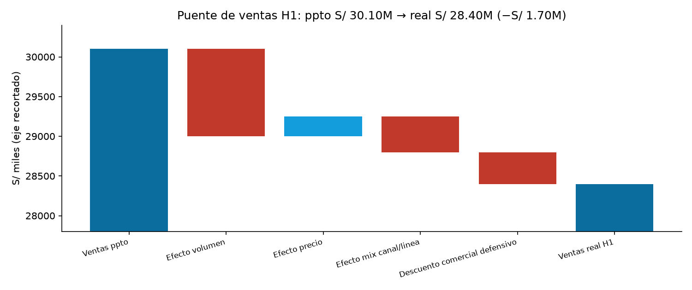
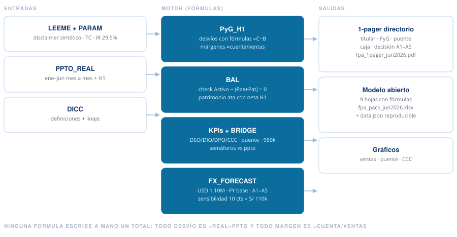

FP&A — reporte mensual y control de gestión
FP&A Monthly Pack
El cierre de junio de una distribuidora importadora, explicado como se explica en un directorio: qué se desvió, por qué, cuánta caja inmovilizó y qué se propone. Con modelo abierto.
Caso 100% sintético con fines demostrativos: la empresa, las cifras y los documentos son inventados y no corresponden a ningún cliente real.

Qué responde
Un reporte mensual no resume el mes: lo atribuye. Este pack parte del cierre de junio 2026 de Distribuidora Andina del Sur S.A.C., importadora sintética de S/ 60.2M anuales de presupuesto (~US$ 16M), con 70% de compras en dólares, y responde las cuatro preguntas que un directorio hace siempre: cuánto se vendió contra el plan, dónde se perdió el margen, cuánta caja se inmovilizó y qué se pide aprobar.
El concepto. El error de principiante es comparar el real contra el ppto y describir la diferencia. Lo correcto es atribuirla: cuánto es volumen, cuánto es precio y mix, cuánto es tipo de cambio y cuánto es decisión comercial. Eso es lo que convierte un reporte en una recomendación defendible —y es lo que este pack hace con el puente de EBITDA.
- Excel con fórmulas
- PyG · Balance · KPIs
- Puente EBITDA + PVM
- Drill-down clientes y SKUs
- Comparativo LY
- 1-pager PDF
El H1 con números fijos
Corte a junio, seis meses acumulados. Ventas S/ 28.40M vs S/ 30.10M del ppto (−5.6%, −S/ 1.70M): el desvío se concentra de abril en adelante y en el canal Institucional (−14.5%), mientras Mayorista sostiene (−1.7%). El margen bruto cae a 22.1% (ppto 24.0%): 110 puntos por tipo de cambio (S/ 3.72 → 3.81), el resto por descuento defensivo y mix hacia Hogar.

EBITDA: S/ 2.35M vs S/ 3.30M
Desvío de −S/ 950k (−28.8%). Margen 8.3% vs 11.0% del ppto.
Neta: S/ 0.66M vs S/ 1.55M
La diferencia de cambio (−S/ 280k) y los financieros (+S/ 130k) amplifican la caída operativa.
CCC: 64 → 79 días
DSO 52 (+7 vs ppto) por institucional moroso; DIO 61 por sobrestock de Hogar; DPO 34.
Deuda CP: +S/ 2.30M
El capital de trabajo se financia con corto plazo. Deuda/EBITDA LTM 1.80x; cobertura 3.6x.

La foto cambiaria cierra el diagnóstico: exposición neta pasiva de USD 1.10M, sin cobertura. Cada 10 céntimos mueven S/ 110k, cerca del 17% de la utilidad neta del semestre. El forecast base lleva el año a ventas S/ 58.5M y EBITDA S/ 5.4M, con pico de deuda de S/ 11.2M en octubre —de ahí el pedido de línea por S/ 2.5M y el forward del 50%.

Dónde vive el desvío
El consolidado no dice quién debe la plata ni qué sobra en el almacén. El drill-down sí. Institucional crece +5.0% contra el año anterior pero falla un presupuesto agresivo (+22.9% vs LY): el desvío es de presupuesto, no de demanda. Y su cobranza tiene nombre y apellido: S/ 2.00M en ocho clientes, con mora de más de 60 días por S/ 330k concentrada en tres —Red Salud Norte, VialSur y Gobierno Regional— y un DSO del canal de 70 días.

En ventas, el puente precio-volumen-mix atribuye los −S/ 1.70M: volumen −1.10M, precio +250k (la lista subió pero el descuento se la comió), mix −450k y descuento defensivo −400k. En Hogar, tres SKUs —escobas, trapeadores y bolsas de 100 litros— concentran S/ 702k con más de seis meses de cobertura: de ahí el recorte de compra del 15%.

Cómo está compuesto
Nueve hojas en la v1, trece en la v2: una sola regla, ningún total se escribe a mano. Todo desvío es =REAL−PPTO
y todo margen es =CUENTA/VENTAS. El 1-pager de directorio sale del modelo, no al revés.

PyG con LY
H1-2025 al lado del ppto y del real: se crece +5.6% pero el margen se comprime igual. El puente PVM explica los −1.70M de ventas.
Balance que cuadra
Activo S/ 25.31M = Pasivo + Patrimonio. El patrimonio ata con la neta del H1.
Drill-down con aging
CxC institucional por cliente y tramo, con DSO. Inventario Hogar por SKU, con cobertura en meses.
FX y forecast
Exposición en USD con sensibilidad y FY base con plan A1–A5 cuantificado.
Qué está verificado
Seis invariantes, comprobadas por el generador antes de publicar. El balance cuadra al sol en ambos cortes (dic-25 S/ 23.50M, jun-26 S/ 25.31M). El patrimonio de junio es el de diciembre más la utilidad neta del H1, al centavo. Los dos puentes suman exacto sus desvíos (−950k y −1.70M). El aging suma los S/ 2.00M institucionales, los SKUs los S/ 3.35M de Hogar y los canales atan con el balance. Los números que declara esta ficha son los que devuelve el Excel: si alguna fórmula se rompe, se nota.
Reproducible: gen_data.py · gen_modelo.py · gen_pdf.py · README del caso
¿Un pack así para tu cierre?
Si tu mes cierra en varios Excels, el real vs ppto se explica de memoria y el directorio pide la caja que el reporte no muestra, escríbeme: lo armamos con tus cuentas y tus drivers.